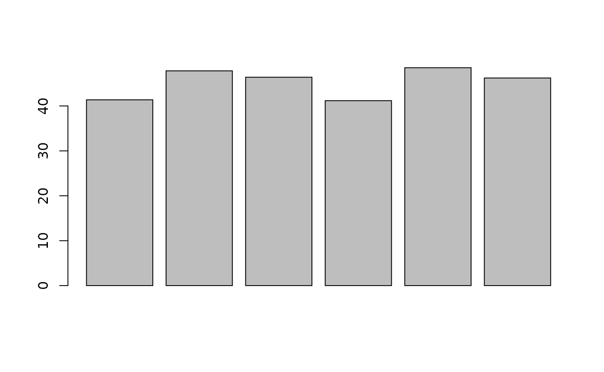
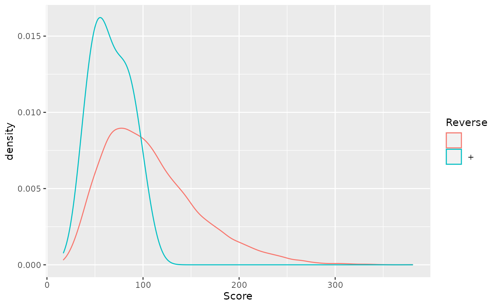
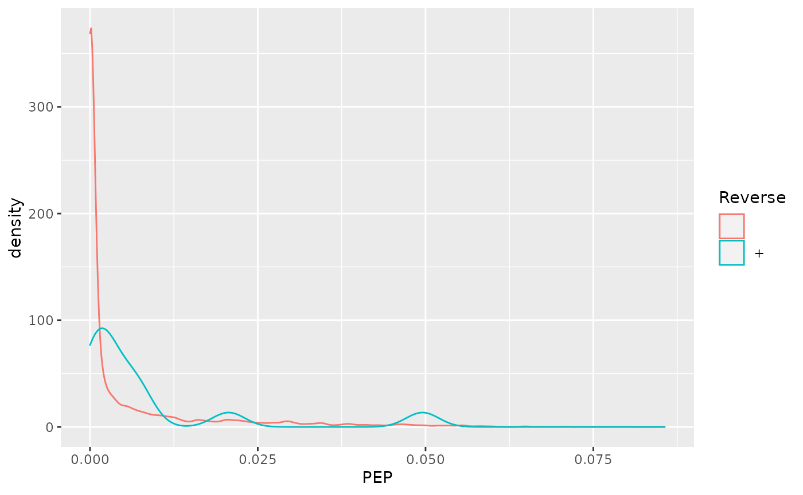

vignettes/v02-QFeaturesPipeline.Rmd
v02-QFeaturesPipeline.RmdLast modified: NA
Compiled: Mon Dec 14 12:39:11 2020
Learning Objectives The goals of this workshop are to provide a real-life example of step-by-step quantitative proteomics data analysis using the QFeatures package. This vignette demonstrates an application using spiked-in data.
Quantitative proteomics data processing is composed of the following steps:
Let’s start by loading the requried packages
The CPTAC spike-in study 6 (Paulovich et al. 2010) combines the Sigma UPS1 standard containing 48 different human proteins that are spiked in at 5 different concentrations (conditions A to E) into a constant yeast protein background. The sample were acquired in triplicate on different instruments in different labs. We are going to start with a subset of the CPTAC study 6 containing conditions A and B for a single lab.
The CPTAC spike-in study design (credit Lieven Clement, statOmics, Ghent University).
The peptide-level data, as processed by MaxQuant (Cox and Mann 2008) is available in the msdata package:
From the names of the columns, we see that the quantitative columns, starting with "Intensity." (note the dot!) are at positions 56 to 61.
names(read.delim(f))
## [1] "Sequence" "N.term.cleavage.window"
## [3] "C.term.cleavage.window" "Amino.acid.before"
## [5] "First.amino.acid" "Second.amino.acid"
## [7] "Second.last.amino.acid" "Last.amino.acid"
## [9] "Amino.acid.after" "A.Count"
## [11] "R.Count" "N.Count"
## [13] "D.Count" "C.Count"
## [15] "Q.Count" "E.Count"
## [17] "G.Count" "H.Count"
## [19] "I.Count" "L.Count"
## [21] "K.Count" "M.Count"
## [23] "F.Count" "P.Count"
## [25] "S.Count" "T.Count"
## [27] "W.Count" "Y.Count"
## [29] "V.Count" "U.Count"
## [31] "Length" "Missed.cleavages"
## [33] "Mass" "Proteins"
## [35] "Leading.razor.protein" "Start.position"
## [37] "End.position" "Unique..Groups."
## [39] "Unique..Proteins." "Charges"
## [41] "PEP" "Score"
## [43] "Identification.type.6A_7" "Identification.type.6A_8"
## [45] "Identification.type.6A_9" "Identification.type.6B_7"
## [47] "Identification.type.6B_8" "Identification.type.6B_9"
## [49] "Experiment.6A_7" "Experiment.6A_8"
## [51] "Experiment.6A_9" "Experiment.6B_7"
## [53] "Experiment.6B_8" "Experiment.6B_9"
## [55] "Intensity" "Intensity.6A_7"
## [57] "Intensity.6A_8" "Intensity.6A_9"
## [59] "Intensity.6B_7" "Intensity.6B_8"
## [61] "Intensity.6B_9" "Reverse"
## [63] "Potential.contaminant" "id"
## [65] "Protein.group.IDs" "Mod..peptide.IDs"
## [67] "Evidence.IDs" "MS.MS.IDs"
## [69] "Best.MS.MS" "Oxidation..M..site.IDs"
## [71] "MS.MS.Count"
(i <- grep("Intensity\\.", names(read.delim(f))))
## [1] 56 57 58 59 60 61We now read these data using the readSummarizedExperiment function. This peptide-level expression data will be imported into R as an instance of class SummarizedExperiment. We also use the fnames argument to set the row-names of the peptides assay to the peptide sequences and specify that the file is a tab-separated table.
cptac_se <- readSummarizedExperiment(f, ecol = i, fnames = "Sequence", sep = "\t")
cptac_se
## class: SummarizedExperiment
## dim: 11466 6
## metadata(0):
## assays(1): ''
## rownames(11466): AAAAGAGGAGDSGDAVTK AAAALAGGK ... YYTVFDRDNNR
## YYTVFDRDNNRVGFAEAAR
## rowData names(65): Sequence N.term.cleavage.window ...
## Oxidation..M..site.IDs MS.MS.Count
## colnames(6): Intensity.6A_7 Intensity.6A_8 ... Intensity.6B_8
## Intensity.6B_9
## colData names(0):Before proceeding, we are going to clean up the sample names and annotate the experiment:
colnames(cptac_se) <- sub("I.+\\.", "", colnames(cptac_se))
cptac_se$condition <- sub("_[7-9]", "", colnames(cptac_se))
cptac_se$id <- sub("^.+_", "", colnames(cptac_se))
colData(cptac_se)
## DataFrame with 6 rows and 2 columns
## condition id
## <character> <character>
## 6A_7 6A 7
## 6A_8 6A 8
## 6A_9 6A 9
## 6B_7 6B 7
## 6B_8 6B 8
## 6B_9 6B 9Let’s also keep only a subset of
keep_var <- c("Sequence", "Proteins", "Leading.razor.protein", "PEP",
"Score", "Reverse", "Potential.contaminant")
rowData(cptac_se) <- rowData(cptac_se)[, keep_var]Missing values can be highly frequent in proteomics. These exist two reasons supporting the existence of missing values, namely biological or technical.
Values that are missing due to the absence (or extremely low contentration) of a protein are observed for biological reasons, and their pattern aren’t random. A protein missing in due to the suppression of its expression will not be missing at random: it will be missing in the condition in which it was suppressed, and be present in the condition where it is expressed.
Due to it’s data-dependent acquisition, mass spectrometry isn’t capable to assaying all peptides in a sample. Peptides that are less abundant than some of their co-eluting ions, peptides that do not ionise well or peptides that do not get identified might be sporadically missing in the final quantitation table, despite their presence in the biological samples. Their absence patterns are random in such cases.
Often, third party software that produce quantiative data use zeros instead of properly reporting missing values. We can use the zeroIsNA() function to replace the 0 by NA values in our cptac_se object and then explore the missing data patterns across columns and rows.
cptac_se <- zeroIsNA(cptac_se)
nNA(cptac_se)
## $nNA
## DataFrame with 1 row and 2 columns
## nNA pNA
## <integer> <numeric>
## 1 31130 45.2497
##
## $nNArows
## DataFrame with 11466 rows and 3 columns
## name nNA pNA
## <character> <integer> <numeric>
## 1 AAAAGAGGAG... 4 66.6667
## 2 AAAALAGGK 0 0.0000
## 3 AAAALAGGKK 0 0.0000
## 4 AAADALSDLE... 0 0.0000
## 5 AAADALSDLE... 0 0.0000
## ... ... ... ...
## 11462 YYSIYDLGNN... 6 100.0000
## 11463 YYTFNGPNYN... 3 50.0000
## 11464 YYTITEVATR 4 66.6667
## 11465 YYTVFDRDNN... 6 100.0000
## 11466 YYTVFDRDNN... 6 100.0000
##
## $nNAcols
## DataFrame with 6 rows and 3 columns
## name nNA pNA
## <character> <integer> <numeric>
## 1 6A_7 4743 41.3658
## 2 6A_8 5483 47.8196
## 3 6A_9 5320 46.3980
## 4 6B_7 4721 41.1739
## 5 6B_8 5563 48.5174
## 6 6B_9 5300 46.2236Distribution of missing value (white). Peptides row with more missing values are moved towards the top of the figure.
Let’s now explore these missing values:
cptac_se data.
filterNA() function.
## remove rows that have 4 or more NAs out of 6
cptac_se <- filterNA(cptac_se, pNA = 4/6)Imputation is the technique of replacing missing data with probable values. This can be done with impute() method. As we have discussed above, there are however two types of missing values in mass spectrometry-based proteomics, namely data missing at random (MAR), and data missing not at random (MNAR). These two types of missing data need to be imputed with different types of imputation methods (Lazar et al. 2016).
Mixed imputation method. Black cells represent presence of quantitation values and light grey corresponds to missing data. The two groups of interest are depicted in green and blue along the heatmap columns. Two classes of proteins are annotated on the left: yellow are proteins with randomly occurring missing values (if any) while proteins in brown are candidates for non-random missing value imputation.
When downstream analyses permit, it might thus be safer not to impute data and deal explicitly with missing values. This is possible when performing hypethesis tests, but not to perform a principal component analysis.
As discussed in the previous chapter, PSMs are deemed relevant after comparison against hist from a decoy database. The origin of these hits is recorded with + in the Reverse variable:
table(rowData(cptac_se)$Reverse)
##
## +
## 7572 12Similarly, a proteomics experiment is also searched against a database of contaminants:
table(rowData(cptac_se)$Potential.contaminant)
##
## +
## 7558 26Let’s visualise some of the cptac’s metadata using standard ggplot2 code:
rowData(cptac_se) %>%
as_tibble() %>%
ggplot(aes(x = Score, colour = Reverse)) +
geom_density()
rowData(cptac_se) %>%
as_tibble() %>%
ggplot(aes(x = PEP, colour = Reverse)) +
geom_density()
We can now create our QFeatures object using the SummarizedExperiment as show below.
cptac <- QFeatures(list(peptides = cptac_se))
cptac
## An instance of class QFeatures containing 1 assays:
## [1] peptides: SummarizedExperiment with 7584 rows and 6 columnsWe should also assign the QFeatures column data with the SummarizedExperiment slot.
colData(cptac) <- colData(cptac_se)Note that it is also possible to directly create a QFeatures object with the readQFeatures() function and the same arguments as the readSummarizedExperiment() used above. In addition, most functions used above and below work on single SummarizedExperiment objects or assays within a QFeatures object.
Using the filterFeatures() function, filter out the reverse and contaminant hits.
cptac <-
cptac %>%
filterFeatures(~ Reverse != "+") %>%
filterFeatures(~ Potential.contaminant != "+")The two code chunks below log-transform and normalise using the assay i as input and adding a new one names as defined by name.
cptac <- logTransform(cptac, i = "peptides",
name = "log_peptides")
cptac <- normalize(cptac, i = "log_peptides",
name = "lognorm_peptides",
method = "center.median")
par(mfrow = c(1, 3))
limma::plotDensities(assay(cptac[["peptides"]]))
limma::plotDensities(assay(cptac[["log_peptides"]]))
limma::plotDensities(assay(cptac[["lognorm_peptides"]]))Three peptide level assays: raw data, log transformed and normalised.
Below, we are going to use median aggregation, as a first attempt. This is however not the best choice, as we will see later.
cptac <-
aggregateFeatures(cptac,
"lognorm_peptides",
name = "proteins_med",
fcol = "Leading.razor.protein",
fun = colMedians,
na.rm = TRUE)Looking at the .n row variable computed during the aggregation, we see that most proteins result of the aggregation of 5 peptides or less, while very few proteins are accounted for by tens of peptides.
table(rowData(cptac[["proteins_med"]])$.n)
##
## 1 2 3 4 5 6 7 8 9 10 11 12 13 14 15 16 17 18 19 20
## 328 234 162 138 85 72 66 49 46 34 25 28 21 12 17 9 5 4 13 5
## 21 22 23 24 25 26 28 29 30 31 32 35 38 39 42 43 51 52 62
## 7 6 4 4 3 3 1 3 1 1 3 1 2 1 1 1 1 1 1
library("factoextra")
library("patchwork")
pca_pep <-
cptac[["lognorm_peptides"]] %>%
filterNA() %>%
assay() %>%
t() %>%
prcomp(scale = TRUE, center = TRUE) %>%
fviz_pca_ind(habillage = cptac$condition, title = "Peptides")
pca_prot <-
cptac[["proteins_med"]] %>%
filterNA() %>%
assay() %>%
t() %>%
prcomp() %>%
fviz_pca_ind(habillage = cptac$condition,
title = "Proteins (median aggregation)")
pca_pep + pca_protPeptide and protein level PCA analyses.
Below, we use the longFormat() function to extract the quantitative and row data in a long format, that can be directly reused by the tidyverse tools.
longFormat(cptac["P02787ups|TRFE_HUMAN_UPS", ,
c("lognorm_peptides", "proteins_med")]) %>%
as_tibble() %>%
mutate(condition = ifelse(grepl("A", colname), "A", "B")) %>%
ggplot(aes(x = colname, y = value, colour = rowname, shape = condition)) +
geom_point(size = 3) +
geom_line(aes(group = rowname)) +
facet_grid(~ assay) +
ggtitle("P02787ups|TRFE_HUMAN_UPS")Peptide and protein expression profile.
Below, we are going to perform our statistical analysis on the protein data.
prots <- cptac[["proteins_med"]]
colData(prots) <- colData(cptac)The limma package is the precursor package that enables the consistent application of linear models to normalliy distributed omics data in general, and microarrays in particuar.
The limma package implements an empirical Bayes method that provides borrows information across features to estimate the standard error and calculate (so called moderate) t statistics. This approach is demonstrably more powerful that a standard t-tests when the number of samples is lot.
The code chunk below illstrated how to set up the model, fit it, and apply the empirical Bayes moderation.
library("limma")
design <- model.matrix(~ prots$condition)
fit <- lmFit(assay(prots), design)
## Warning: Partial NA coefficients for 23 probe(s)
fit <- eBayes(fit)Finally, the topTable() function is used the extract the results for the coefficient of interest.
res <-
topTable(fit, coef = "prots$condition6B", number = Inf) %>%
rownames_to_column("protein") %>%
as_tibble() %>%
mutate(TP = grepl("ups", protein))Note the warning about partial NA coefficients for 23 probes:
na_coefs <-
filter(res, is.na(t)) %>%
pull(protein)
assay(prots[na_coefs, ])
## 6A_7 6A_8 6A_9 6B_7 6B_8
## P00167ups|CYB5_HUMAN_UPS NaN NaN NaN -0.7642817 -2.0050174
## P01112ups|RASH_HUMAN_UPS NaN NaN NaN -1.5367155 NaN
## P05413ups|FABPH_HUMAN_UPS NaN NaN NaN -3.3221739 NaN
## P08758ups|ANXA5_HUMAN_UPS NaN NaN NaN -2.7776131 -1.9904771
## sp|P06704|CDC31_YEAST NaN NaN NaN -1.1834305 -2.1019557
## sp|P32608|RTG2_YEAST NaN NaN NaN NaN -4.4191375
## sp|P32769|HBS1_YEAST NaN -1.359851 -0.7138411 NaN NaN
## sp|P34217|PIN4_YEAST NaN NaN NaN -0.8180873 -0.1083583
## sp|P34237|CASP_YEAST NaN NaN NaN -1.5447431 -1.6367477
## sp|P38166|SFT2_YEAST -1.564052 -1.052527 NaN NaN NaN
## sp|P40056|GET2_YEAST NaN -1.067516 -1.3866843 NaN NaN
## sp|P40533|TED1_YEAST NaN NaN NaN -2.0294135 NaN
## sp|P46965|SPC1_YEAST NaN -3.404591 -3.6174615 NaN NaN
## sp|P48363|PFD3_YEAST NaN NaN NaN -0.1707164 NaN
## sp|P53044|UFD1_YEAST NaN NaN NaN -2.3740155 -1.4905932
## sp|P53091|MCM6_YEAST NaN -1.229600 -1.6762933 NaN NaN
## sp|P53115|INO80_YEAST NaN NaN NaN -2.6986219 NaN
## sp|P53893|RIA1_YEAST -1.809222 NaN -1.5085444 NaN NaN
## sp|Q05029|BCH1_YEAST -1.836222 -1.736322 NaN NaN NaN
## sp|Q07540|FRDA_YEAST NaN NaN NaN -2.3652501 NaN
## sp|Q08645|FOLE_YEAST NaN NaN NaN -1.7071443 NaN
## sp|Q12255|NYV1_YEAST NaN NaN NaN -2.8508289 NaN
## sp|Q12280|IQG1_YEAST NaN NaN NaN -2.5438648 -2.0314751
## 6B_9
## P00167ups|CYB5_HUMAN_UPS -1.1067954
## P01112ups|RASH_HUMAN_UPS -1.5455337
## P05413ups|FABPH_HUMAN_UPS -3.8744226
## P08758ups|ANXA5_HUMAN_UPS -2.0731897
## sp|P06704|CDC31_YEAST -1.5681249
## sp|P32608|RTG2_YEAST -2.7710331
## sp|P32769|HBS1_YEAST NaN
## sp|P34217|PIN4_YEAST -0.1826536
## sp|P34237|CASP_YEAST -1.6714608
## sp|P38166|SFT2_YEAST NaN
## sp|P40056|GET2_YEAST NaN
## sp|P40533|TED1_YEAST -1.7311957
## sp|P46965|SPC1_YEAST NaN
## sp|P48363|PFD3_YEAST -0.4924892
## sp|P53044|UFD1_YEAST NaN
## sp|P53091|MCM6_YEAST NaN
## sp|P53115|INO80_YEAST -2.7341224
## sp|P53893|RIA1_YEAST NaN
## sp|Q05029|BCH1_YEAST NaN
## sp|Q07540|FRDA_YEAST -2.0162325
## sp|Q08645|FOLE_YEAST -1.5094503
## sp|Q12255|NYV1_YEAST -2.8074462
## sp|Q12280|IQG1_YEAST -2.4485187We can now visualise the results using a volcano plot:
res %>%
ggplot(aes(x = logFC, y = -log10(adj.P.Val))) +
geom_point(aes(colour = TP)) +
geom_vline(xintercept = c(-1, 1)) +
geom_hline(yintercept = -log10(0.05)) +
scale_color_manual(values = c("black","red"))
## Warning: Removed 23 rows containing missing values (geom_point).Volcano plot highlighing spiked-in proteins in red.
Using the pipeline described above, we would would identify a single differentially expressed protein at an 5 percent FDR but miss out the other 36 expected spike-in proteins.
We can assess our results in terms of true/false postitves/negatives:
As shown below, it is possible to substantially improve these results by aggregating features using a robust summarisation (available as MsCoreUtils::robustSummary()), i.e robust regression with M-estimation using Huber weights, as described in section 2.7 in (Sticker et al. 2019).
Aggregation using robust summarisation.
Repeat and adapt what we have seen here using, for example, the robustSummary() function.
sessionInfo()
## R Under development (unstable) (2020-11-02 r79396)
## Platform: x86_64-pc-linux-gnu (64-bit)
## Running under: Ubuntu 20.04.1 LTS
##
## Matrix products: default
## BLAS/LAPACK: /usr/lib/x86_64-linux-gnu/openblas-pthread/libopenblasp-r0.3.8.so
##
## locale:
## [1] LC_CTYPE=en_US.UTF-8 LC_NUMERIC=C
## [3] LC_TIME=en_US.UTF-8 LC_COLLATE=en_US.UTF-8
## [5] LC_MONETARY=en_US.UTF-8 LC_MESSAGES=C
## [7] LC_PAPER=en_US.UTF-8 LC_NAME=C
## [9] LC_ADDRESS=C LC_TELEPHONE=C
## [11] LC_MEASUREMENT=en_US.UTF-8 LC_IDENTIFICATION=C
##
## attached base packages:
## [1] parallel stats4 stats graphics grDevices utils datasets
## [8] methods base
##
## other attached packages:
## [1] patchwork_1.1.0 factoextra_1.0.7
## [3] gplots_3.1.1 limma_3.47.1
## [5] QFeatures_1.1.0 MultiAssayExperiment_1.17.2
## [7] SummarizedExperiment_1.21.1 Biobase_2.51.0
## [9] GenomicRanges_1.43.1 GenomeInfoDb_1.27.3
## [11] IRanges_2.25.5 S4Vectors_0.29.6
## [13] BiocGenerics_0.37.0 MatrixGenerics_1.3.0
## [15] matrixStats_0.57.0 forcats_0.5.0
## [17] stringr_1.4.0 dplyr_1.0.2
## [19] purrr_0.3.4 readr_1.4.0
## [21] tidyr_1.1.2 tibble_3.0.4
## [23] ggplot2_3.3.2 tidyverse_1.3.0
## [25] BiocStyle_2.19.1
##
## loaded via a namespace (and not attached):
## [1] colorspace_2.0-0 ggsignif_0.6.0 ellipsis_0.3.1
## [4] rio_0.5.16 rprojroot_2.0.2 XVector_0.31.1
## [7] fs_1.5.0 rstudioapi_0.13 ggpubr_0.4.0
## [10] farver_2.0.3 ggrepel_0.8.2 fansi_0.4.1
## [13] lubridate_1.7.9.2 xml2_1.3.2 knitr_1.30
## [16] jsonlite_1.7.2 broom_0.7.2 dbplyr_2.0.0
## [19] BiocManager_1.30.10 compiler_4.1.0 httr_1.4.2
## [22] backports_1.2.1 assertthat_0.2.1 Matrix_1.2-18
## [25] lazyeval_0.2.2 cli_2.2.0 htmltools_0.5.0
## [28] tools_4.1.0 gtable_0.3.0 glue_1.4.2
## [31] GenomeInfoDbData_1.2.4 Rcpp_1.0.5 carData_3.0-4
## [34] cellranger_1.1.0 pkgdown_1.6.1 vctrs_0.3.5
## [37] xfun_0.19 ps_1.5.0 openxlsx_4.2.3
## [40] rvest_0.3.6 lifecycle_0.2.0 gtools_3.8.2
## [43] rstatix_0.6.0 zlibbioc_1.37.0 MASS_7.3-53
## [46] scales_1.1.1 ragg_0.4.0 hms_0.5.3
## [49] ProtGenerics_1.23.5 AnnotationFilter_1.15.0 curl_4.3
## [52] yaml_2.2.1 memoise_1.1.0 stringi_1.5.3
## [55] highr_0.8 desc_1.2.0 caTools_1.18.0
## [58] zip_2.1.1 rlang_0.4.9 pkgconfig_2.0.3
## [61] systemfonts_0.3.2 bitops_1.0-6 evaluate_0.14
## [64] lattice_0.20-41 labeling_0.4.2 tidyselect_1.1.0
## [67] magrittr_2.0.1 R6_2.5.0 generics_0.1.0
## [70] DelayedArray_0.17.5 DBI_1.1.0 foreign_0.8-80
## [73] pillar_1.4.7 haven_2.3.1 withr_2.3.0
## [76] MsCoreUtils_1.3.1 abind_1.4-5 RCurl_1.98-1.2
## [79] msdata_0.31.0 modelr_0.1.8 crayon_1.3.4
## [82] car_3.0-10 KernSmooth_2.23-18 rmarkdown_2.5
## [85] grid_4.1.0 readxl_1.3.1 data.table_1.13.4
## [88] reprex_0.3.0 digest_0.6.27 textshaping_0.2.1
## [91] munsell_0.5.0Cox, J, and M Mann. 2008. “MaxQuant Enables High Peptide Identification Rates, Individualized P.p.b.-range Mass Accuracies and Proteome-Wide Protein Quantification.” Nat Biotechnol 26 (12): 1367–72. https://doi.org/10.1038/nbt.1511.
Lazar, C, L Gatto, M Ferro, C Bruley, and T Burger. 2016. “Accounting for the Multiple Natures of Missing Values in Label-Free Quantitative Proteomics Data Sets to Compare Imputation Strategies.” J Proteome Res 15 (4): 1116–25. https://doi.org/10.1021/acs.jproteome.5b00981.
Paulovich, Amanda G, Dean Billheimer, Amy-Joan L Ham, Lorenzo Vega-Montoto, Paul A Rudnick, David L Tabb, Pei Wang, et al. 2010. “Interlaboratory Study Characterizing a Yeast Performance Standard for Benchmarking LC-MS Platform Performance.” Mol. Cell. Proteomics 9 (2): 242–54.
Sticker, Adriaan, Ludger Goeminne, Lennart Martens, and Lieven Clement. 2019. “Robust Summarization and Inference in Proteome-Wide Label-Free Quantification.” bioRxiv. https://doi.org/10.1101/668863.